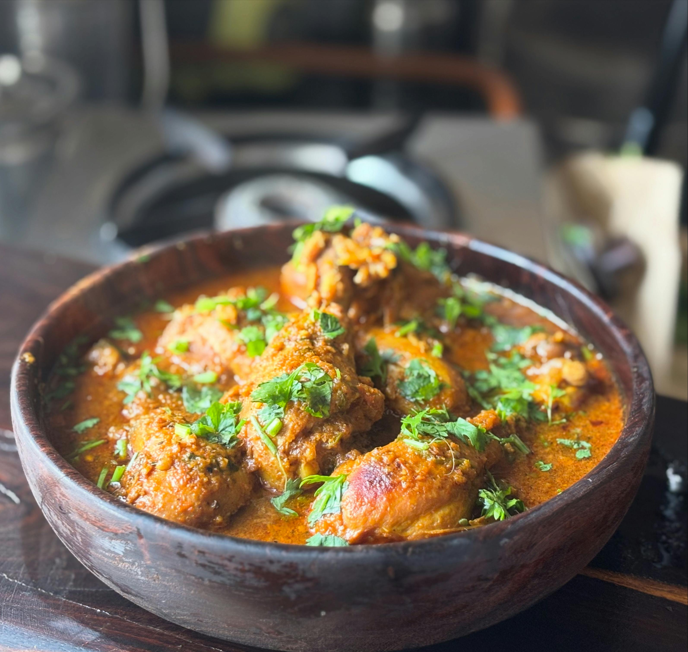

Ingredienser
- 1 Lök
- 2dl yoghurt
- Briyani-kryddor
- Salt
- 400g protein
- 2dl Basmatiris
Hur tillagar vi?
- Stek löken tillsammans med proteinet och kryddorna.
- Tillaga riset tills det är nästan helt klart.
- Blanda ris och protein, tillsätt yoghurt och låt sjuda i 10min
- Servera gärna med naanbröd och toppad med koriander
